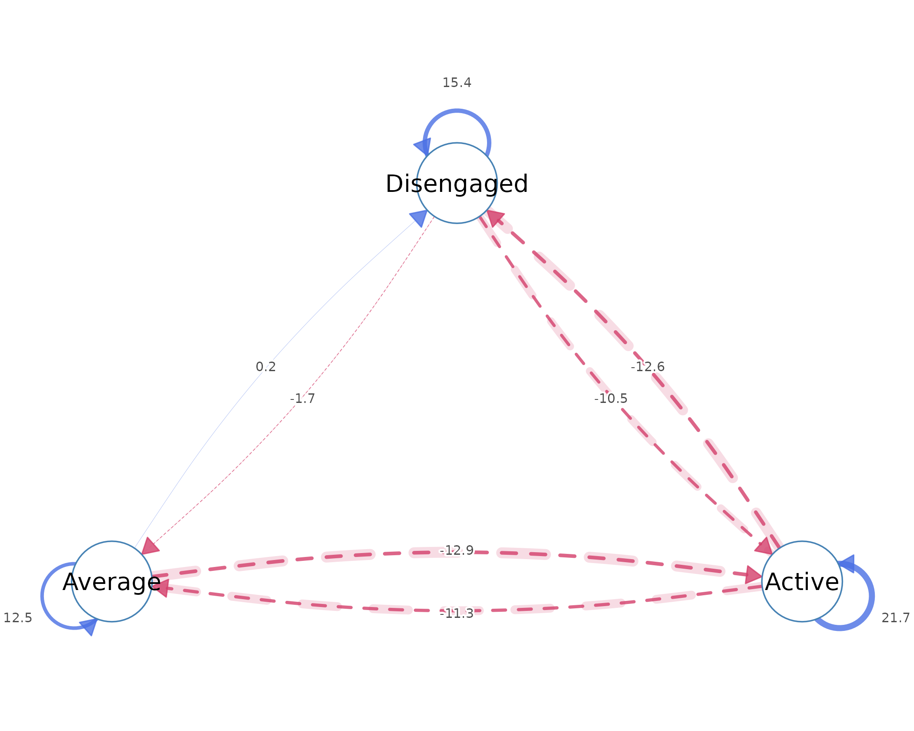
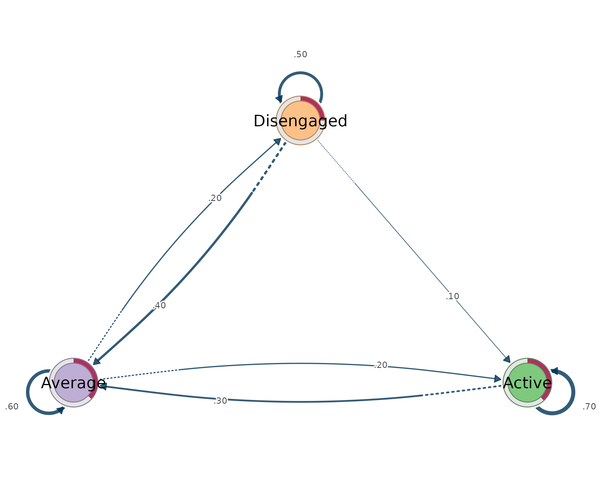

Get started with lagdynamics
Mohammed Saqr
Sonsoles López-Pernas
Source:vignettes/lagdynamics.Rmd
lagdynamics.RmdThis quick start takes one bundled sequence data set from raw rows to a fitted lag-sequential analysis (LSA) model, tidy transition tables, two plots, and one uncertainty check.
For the method background, see
vignette("intro", package = "lagdynamics"). For a complete
applied analysis, see
vignette("workflow", package = "lagdynamics"). For all
plotting variants, see
vignette("plotting", package = "lagdynamics").
Fit a model
engagement contains weekly engagement states for
students. It is a wide sequence table: each row is one sequence, each
column is an ordered time point, and each cell is a state.
head(engagement)
#> 1 2 3 4 5 6 7
#> 1 Active Disengaged Disengaged Disengaged Active Active Active
#> 2 Average Average Average Average Average Average Average
#> 3 Average Active Active Active Active Active Active
#> 4 Active Active Active Active Active Average Average
#> 5 Active Active Active Average Active Average Active
#> 6 Average Average Disengaged Average Disengaged Disengaged Average
#> 8 9 10 11 12 13 14 15
#> 1 Active Average Active Average Active <NA> <NA> <NA>
#> 2 Average Average Active Average Average Average Average Average
#> 3 Active Active Average Active Active Active Active Active
#> 4 Active Active Active Average Active Average Active Average
#> 5 Active Active Disengaged Active Active Active Average Average
#> 6 Average Average Disengaged Average Disengaged Average Average Averagelsa() fits the model in one call. It counts
state-to-state transitions, computes expected counts under independence,
and reports adjusted residuals for every from -> to
transition.
fit <- lsa(engagement)
fit
#> Lag Sequential Analysis - classical (lag 1, directed)
#> 3 states | 1734 transitions | 1870 events | 136 sequences
#> states: Active, Average, Disengaged
#> independence: G² = 618.3, df = 4, p <2e-16
#>
#> Significant transitions (p < 0.05): 7 of 9
#> strongest over-represented (of 3):
#> Active -> Active z = +21.7 ***
#> Disengaged -> Disengaged z = +15.4 ***
#> Average -> Average z = +12.5 ***
#>
#> Initial states:
#> Active 0.382 ████████████████████████
#> Average 0.368 ███████████████████████
#> Disengaged 0.250 ████████████████Read the result
transitions() is the main table. It returns one row per
transition with observed counts, expected counts, transition
probabilities, adjusted residuals, p-values, and significance flags.
transitions(fit)
#> from to lag count expected prob prob_col adj_res p
#> 1 Active Active 1 459 247 0.698 0.7051 21.663 4.60e-104
#> 2 Average Active 1 153 282 0.204 0.2350 -12.906 4.16e-38
#> 3 Disengaged Active 1 39 122 0.120 0.0599 -10.549 5.11e-26
#> 4 Active Average 1 176 290 0.267 0.2307 -11.319 1.06e-29
#> 5 Average Average 1 458 330 0.610 0.6003 12.453 1.35e-35
#> 6 Disengaged Average 1 129 143 0.397 0.1691 -1.736 8.25e-02
#> 7 Active Disengaged 1 23 121 0.035 0.0719 -12.557 3.64e-36
#> 8 Average Disengaged 1 140 139 0.186 0.4375 0.176 8.60e-01
#> 9 Disengaged Disengaged 1 157 60 0.483 0.4906 15.390 1.90e-53
#> yules_q kappa kappa_z kappa_p lift sign significant
#> 1 0.828 0.4438 19.19 4.68e-82 1.858 over TRUE
#> 2 -0.601 -0.4994 -14.70 6.81e-49 0.543 under TRUE
#> 3 -0.698 -0.7069 -11.46 2.03e-30 0.320 under TRUE
#> 4 -0.534 -0.4242 -12.48 9.39e-36 0.608 under TRUE
#> 5 0.553 0.2275 9.83 7.97e-23 1.386 over TRUE
#> 6 -0.108 -0.1618 -2.96 3.03e-03 0.902 under FALSE
#> 7 -0.826 -0.8272 -13.41 5.14e-41 0.189 under TRUE
#> 8 0.011 -0.0903 -1.66 9.79e-02 1.010 over FALSE
#> 9 0.754 0.3136 13.56 7.34e-42 2.618 over TRUEMost first reads start with the transitions that depart from chance.
transitions(fit, significant = TRUE)
#> from to lag count expected prob prob_col adj_res p
#> 1 Active Active 1 459 247 0.698 0.7051 21.7 4.60e-104
#> 2 Average Active 1 153 282 0.204 0.2350 -12.9 4.16e-38
#> 3 Disengaged Active 1 39 122 0.120 0.0599 -10.5 5.11e-26
#> 4 Active Average 1 176 290 0.267 0.2307 -11.3 1.06e-29
#> 5 Average Average 1 458 330 0.610 0.6003 12.5 1.35e-35
#> 6 Active Disengaged 1 23 121 0.035 0.0719 -12.6 3.64e-36
#> 7 Disengaged Disengaged 1 157 60 0.483 0.4906 15.4 1.90e-53
#> yules_q kappa kappa_z kappa_p lift sign significant
#> 1 0.828 0.444 19.19 4.68e-82 1.858 over TRUE
#> 2 -0.601 -0.499 -14.70 6.81e-49 0.543 under TRUE
#> 3 -0.698 -0.707 -11.46 2.03e-30 0.320 under TRUE
#> 4 -0.534 -0.424 -12.48 9.39e-36 0.608 under TRUE
#> 5 0.553 0.227 9.83 7.97e-23 1.386 over TRUE
#> 6 -0.826 -0.827 -13.41 5.14e-41 0.189 under TRUE
#> 7 0.754 0.314 13.56 7.34e-42 2.618 over TRUEThe companion verbs read the other parts of the same fitted model.
nodes(fit)
#> state outgoing incoming
#> 1 Active 658 651
#> 2 Average 751 763
#> 3 Disengaged 325 320
tests(fit)
#> test statistic df p
#> 1 lrx2 618 4 1.69e-132
#> 2 x2 629 4 7.41e-135
initial(fit)
#> state init_prob
#> 1 Active 0.382
#> 2 Average 0.368
#> 3 Disengaged 0.250
summary(fit)
#> Lag Sequential Analysis
#> =======================
#> Lag Sequential Analysis - classical (lag 1, directed)
#> 3 states | 1734 transitions | 1870 events | 136 sequences
#> states: Active, Average, Disengaged
#> independence: G² = 618.3, df = 4, p <2e-16
#>
#> Significant transitions (p < 0.05): 7 of 9
#> strongest over-represented (of 3):
#> Active -> Active z = +21.7 ***
#> Disengaged -> Disengaged z = +15.4 ***
#> Average -> Average z = +12.5 ***
#>
#> Initial states:
#> Active 0.382 ████████████████████████
#> Average 0.368 ███████████████████████
#> Disengaged 0.250 ████████████████
#>
#> Node activity (share of transitions):
#> Active out 0.379 ██████████ in 0.375 ██████████
#> Average out 0.433 ████████████ in 0.440 ████████████
#> Disengaged out 0.187 █████ in 0.185 █████
#>
#> Observed counts (obs):
#> Active Average Disengaged
#> Active 459 176 23
#> Average 153 458 140
#> Disengaged 39 129 157
#>
#> Expected counts (exp):
#> Active Average Disengaged
#> Active 247 290 121
#> Average 282 330 139
#> Disengaged 122 143 60
#>
#> Transitional probabilities (prob):
#> Active Average Disengaged
#> Active 0.698 0.267 0.035
#> Average 0.204 0.610 0.186
#> Disengaged 0.120 0.397 0.483
#>
#> Adjusted residuals (adj_res):
#> Active Average Disengaged
#> Active 21.7 -11.32 -12.557
#> Average -12.9 12.45 0.176
#> Disengaged -10.5 -1.74 15.390Plot the model
The default plot is a residual heatmap. Rows are current states, columns are next states, and colour is the adjusted residual.
plot(fit)
The network view uses the same residual model: edges show transitions that are over- or under-represented relative to independence.
plot(fit, type = "network")
Use weights = "tna" or weights = "relative"
when the question is the usual transition-network question: where does
the process tend to go next?
plot(fit, type = "network", weights = "tna")
Check uncertainty
Adjusted residuals test departures from independence in the fitted table. Edge-level claims should also report uncertainty. The analytic certainty estimator gives credible intervals for transition probabilities without resampling.
cert <- certainty_lsa(fit)
cert
#> <lsa_certainty> (analytic Dirichlet-Multinomial)
#> engine: classical
#> prior: Dirichlet(0.50)
#> CI level: 95% | inference: stability
#> certain edges: 7 of 9
as.data.frame(cert) |> head(4)
#> from to observed prob_observed prob_mean prob_se prob_ci_low
#> 1 Active Active 459 0.698 0.697 0.0179 0.6611
#> 2 Average Active 153 0.204 0.204 0.0147 0.1760
#> 3 Disengaged Active 39 0.120 0.121 0.0180 0.0879
#> 4 Active Average 176 0.267 0.268 0.0172 0.2345
#> prob_ci_high p_value stable adj_res_observed adj_res_stable
#> 1 0.731 5.56e-20 TRUE 21.7 TRUE
#> 2 0.233 6.06e-04 TRUE -12.9 TRUE
#> 3 0.158 9.45e-02 FALSE -10.5 FALSE
#> 4 0.302 1.21e-04 TRUE -11.3 TRUEFor resampling-based edge uncertainty, use
bootstrap_lsa(). For whole-network reproducibility, use
reliability_lsa() and stability_lsa(). For
empirical null comparisons, use permute_lsa() or
compare_lsa(). These are covered in
vignette("confirmatory", package = "lagdynamics").
Where next
Use the focused vignettes according to the claim you need to support:
-
vignette("intro", package = "lagdynamics")for concepts and package map. -
vignette("workflow", package = "lagdynamics")for a full claim-to-evidence analysis. -
vignette("interop", package = "lagdynamics")for wide data, long logs,tna,Nestimate,cograph, andlsa_to_tna(). -
vignette("plotting", package = "lagdynamics")for heatmaps, networks, chords, sunbursts, and comparison plots. -
vignette("confirmatory", package = "lagdynamics")for certainty, bootstrap, reliability, stability, permutation, and group comparison. -
vignette("lag-transition-networks", package = "lagdynamics")for TNA-style transition networks.
Full documentation and reference: https://pak.dynasite.org/lagdynamics/
Part of the Dynalytics framework.